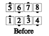
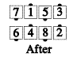
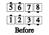
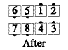

From waves only: Leads Trade, while the trailing center Circulates to the nearest end of the other wave, and the trailing end Circulates to the nearest center of the other wave.
From two-faced lines only: The Leads Partner Trade, while the trailers Diagonal Pass Thru with each other.


Note: The right-shoulder passing rule applies to this call.
Timing: 6
© Copyright 1982, 1986-1988, 1995, 2001-2015. Bill Davis, John Sybalsky, and CALLERLAB Inc., The International Association of Square Dance Callers. Permission to reprint, republish, and create derivative works without royalty is hereby granted, provided this notice appears. Publication on the Internet of derivative works without royalty is hereby granted provided this notice appears. Permission to quote parts or all of this document without royalty is hereby granted, provided this notice is included. Information contained herein shall not be changed nor revised in any derivation or publication.